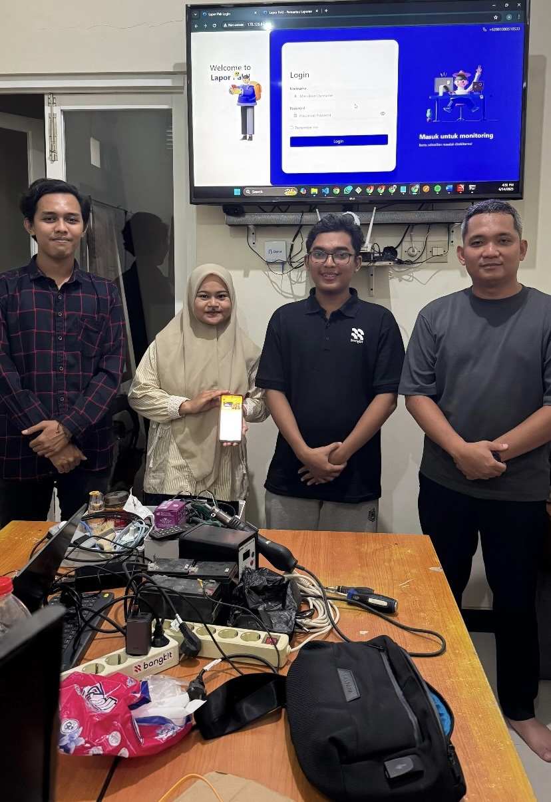

LaporPak! Chatbot Pelaporan Lalu Lintas Se-Jatim, Web Polres Bojonegoro & UI/UX Ditlantas Jatim
Dikembangkan saat bertugas sebagai Product Developer di Synergics Digital Solusindo. Merancang LaporPak!, sistem pelaporan lalu lintas berbasis chatbot WhatsApp yang terintegrasi penuh dengan aplikasi Android dan dasbor monitoring web, membangun situs web Polres Bojonegoro, serta mendesain antarmuka UI/UX situs Ditlantas Polda Jawa Timur.
- Integrasi alur laporan masyarakat via WhatsApp ke pusat pemantauan web dan aplikasi mobile secara real-time.
- Perancangan antarmuka monitoring operasional untuk mempercepat tindak lanjut laporan lalu lintas di Jawa Timur.